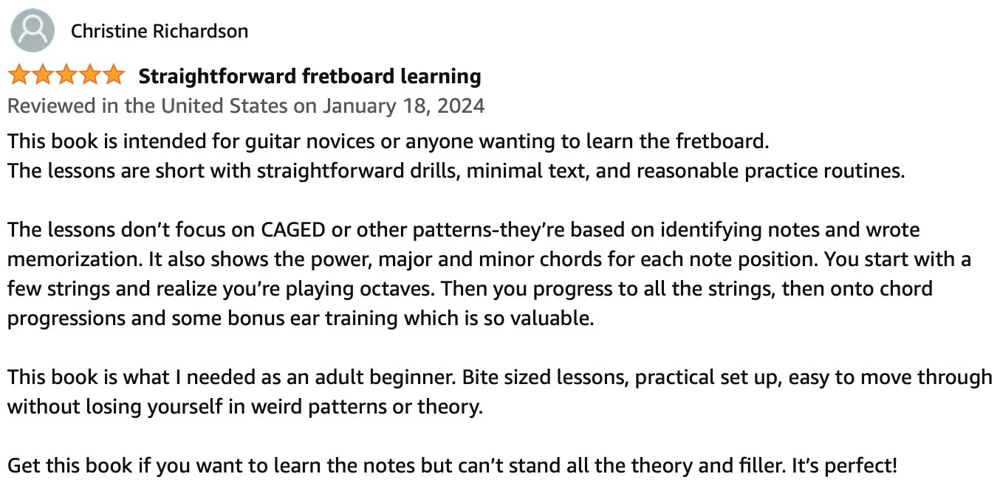

A Clear and Strategic Music Theory Learning Roadmap
Updated February 1, 2024.
Hello! My name is Denisse Vallecillos and I’m a teacher, conductor, and professional violinist. I have a Bachelor’s Degree in Music Education and a Master’s Degree in Orchestral Conducting. I teach and direct orchestra ensembles at all levels. However, for 5 years and with the help from a local guitar teacher (Chris Paul), I taught a High School-level introductory guitar class.
When I started the class, I did a lot of research on pedagogy and guitar methods. The recommended learning path as outlined by the National Association for Music Education is one that is based on classical music and performing as an ensemble. I was already directing 5 orchestras and just did not have the time to take on yet another performing ensemble. Additionally, the guitar class was unofficially the pre-requisite for the AP Music Theory class if students wanted to learn some foundational concepts first. Therefore I decided that the class would focus on popular music. After about 8 to 12 weeks (depending on the size of the class), we were strumming along to Hotel California. It was a very popular class because we had fun! And yes, we still learned how to read standard notation (sheet music). If you purchase the ebook, one of the bonus sections will teach you how (and why) you should learn this valuable skill.
Anyway, this series of books (Music Theory and The Fretboard) simply contain my theory lesson plans that I taught to my high school students. And it’s because I found so much success with my classes that I felt like other people would like the way that Chris and I explain these theory concepts.
Yes, “level 2” is coming out soon!
Who are you? Who this book is for…
This book is for the guitarist who has heard a lot about the importance of learning theory but does not know where to start. Ideally, you can play several open position chords (“cowboy chords”), play the rhythm part to some songs, and play a few riffs and scales. However, you don’t really know the fretboard that well and instead you rely on shapes.
But you want a better understanding of what exactly it is that you’re playing.
The result this book can help you achieve
My goal is to help the student create a strong foundation first. One of the things I noticed that most guitar students lack is a clear understanding of harmony. According to Aaron Copland’s “What to Listen for in Music” (first published in 1939), the four elements of music are rhythm, melody, harmony, and tone color (timbre). Much of music theory education is the study of harmony because of how complicated it can get. However, you don’t need to know everything about music theory in order to start applying it in real life.
The second thing I have discovered about the guitar world is that many educational resources teach you just the shortcuts, patterns, and shapes. There’s nothing wrong with shortcuts, patterns, and shapes. However, I view music theory as “the product”. While guitar-specific systems like CAGED are “the packaging”. An ideal learning pathway is one that has both—the fundamental music concepts and the shortcuts/patterns/shapes.
I have found a way to simplify the music theory learning pathway that guarantees a true understanding of how music works.
Ultimately, the result you will attain will be a confidence that comes from a solid foundation of competence in harmonic knowledge and fretboard mastery.
How and why my roadmap works
There’s no new information in this book that you can’t find elsewhere. However, I’ve carefully put together the information in a specific order to maximize efficiency and minimize overwhelm.
It’s very easy to write a boring theory book that covers an overwhelming set of concepts. It seems some authors are afraid of being criticized for leaving some stuff out.
The secret to finding rapid success is to focus on the most relevant information that will give you the most results possible. I have found that many well-meaning guitar teachers cannot resist the urge to include less-useful concepts (for beginners), like modes, in their introductory-level books. I purposefully exclude some concepts because the truth is that you can sound pretty good on the guitar when you get really good at the fundamentals. After you have mastered the fundamentals, you’ll be better equipped to learning more complex concepts.
This Level 1 book covers 2-note chords (power chords) and the bass strings (E, A, D). The Level 2 book will cover 3-note chords (triads) across all 6 strings. And the Level 3 book will cover 4-note chords (6ths and 7ths).
This book takes the abstract (theory) and the concrete (shapes) and puts them side-by-side. Look through the book; you’ll notice that each theory concept has a dedicated “theory” chapter and a dedicated “fretboard” chapter. I plan to keep the “theory” chapters light on words. If I can succinctly define each concept, then you can spend more time on the “fretboard” chapters studying the shapes.
About my co-author Chris Paul
Chris plays the tenor saxophone, piano, bass, and guitar. He holds a Professional Guitar Skills Certificate from Berklee Online. He is the author of “Guitar Fretboard Mastery: Daily Fretboard Memorization Guide” which can be purchased on Amazon at https://www.amazon.com/dp/B0CLL1BMZ5.
Here is a recent review of his book—
